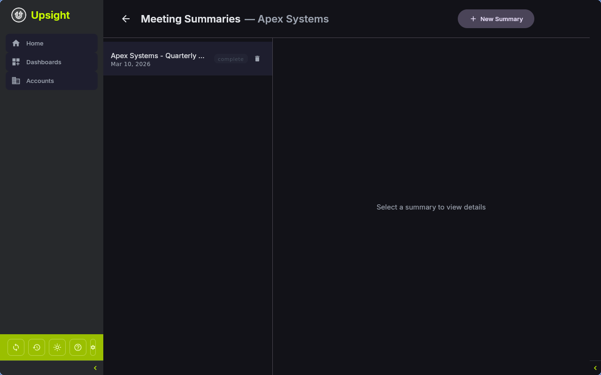

Meeting Summaries¶
Upsight can generate structured meeting summaries from raw transcripts using an AI CLI tool. Each summary includes a full detailed summary and a shorter Slack-ready digest.
Overview¶
Meeting summaries are scoped to an account. To access them, either:
- Open an account and select Summarize Meeting from the actions menu
- Right-click an account in the list and choose Summarize Meeting
- Use the actions menu on a dashboard card or account list row
The meeting summary screen shows a master-detail layout: a list of summaries on the left, and the selected summary content on the right.

Importing a Transcript¶
Click New Summary to open the import dialog. Fill in:
- Meeting name -- a descriptive name (e.g. "Q1 Cadence Call")
- Meeting date -- defaults to today (format: YYYY-MM-DD)
- Transcript file (required) -- click Choose File to select a text file containing the meeting transcript
- Context file (optional) -- additional context for the AI, such as previous meeting notes or account background
Click Generate Summary to start the AI processing.
Tip
Save your meeting transcripts as plain text files (.txt). The AI works best with raw transcript text rather than formatted documents.
AI-Powered Summarization¶
When you generate a summary, Upsight:
- Creates a database record with status "processing"
- Sends the transcript to the configured AI binary with a full-summary prompt that includes the account name, meeting date, and your CSM name
- Humanizes the generated paragraphs through a second AI pass (headers and bullet lists are left untouched)
- Generates a separate Slack-ready summary using a shorter prompt format
- Saves both summaries to the database
The full summary and Slack summary appear in the detail panel once generation completes. If generation fails, the status shows "failed" with an error message, and you can click Retry to try again.
Configuring the AI Binary¶
Meeting summaries require a CLI-based AI tool. See Getting Started > Setting Up an AI Assistant for setup instructions.
The AI binary used for each summary is recorded in the database, so you can tell which tool generated which summary.
Currently supported command patterns:
| Binary | Invocation |
|---|---|
claude |
claude --print (reads prompt from stdin) |
| Other | Binary is called directly (reads prompt from stdin) |
Viewing and Managing Summaries¶
Detail View¶
Select a summary from the list to view:
- Full Summary -- the complete meeting summary rendered as Markdown
- Slack Summary -- a condensed version suitable for posting in Slack channels
- Status indicator (processing, completed, or failed)
- The AI binary that was used
- Meeting date and name
Actions¶
- Copy -- copy the full summary or Slack summary to the clipboard
- Export -- save the summary as a Markdown file
- Retry -- regenerate a failed summary
- Delete -- remove a summary (with undo via snackbar)
Note
Summaries are stored in the local database. They are not synced to Salesforce. Use the Export feature or Copy to share summaries with your team.